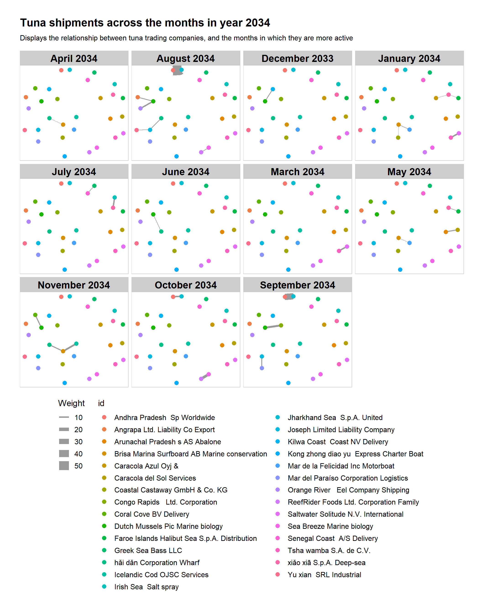
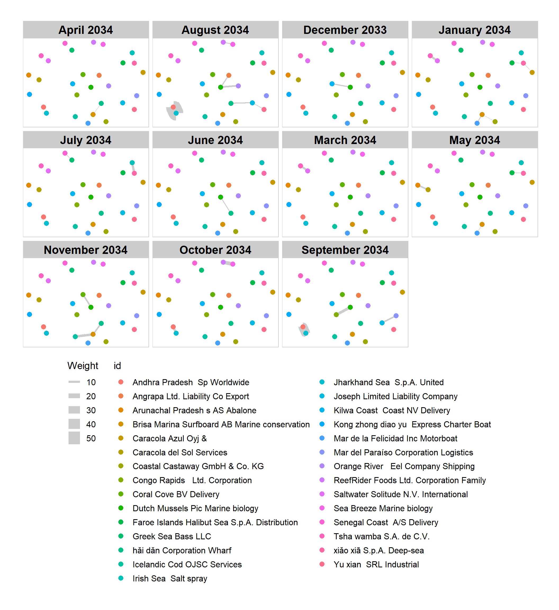
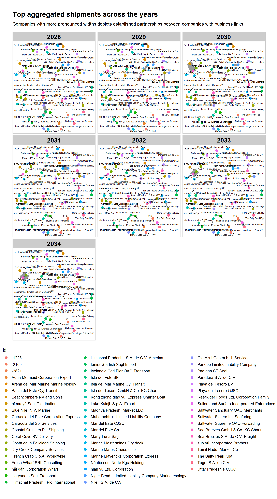
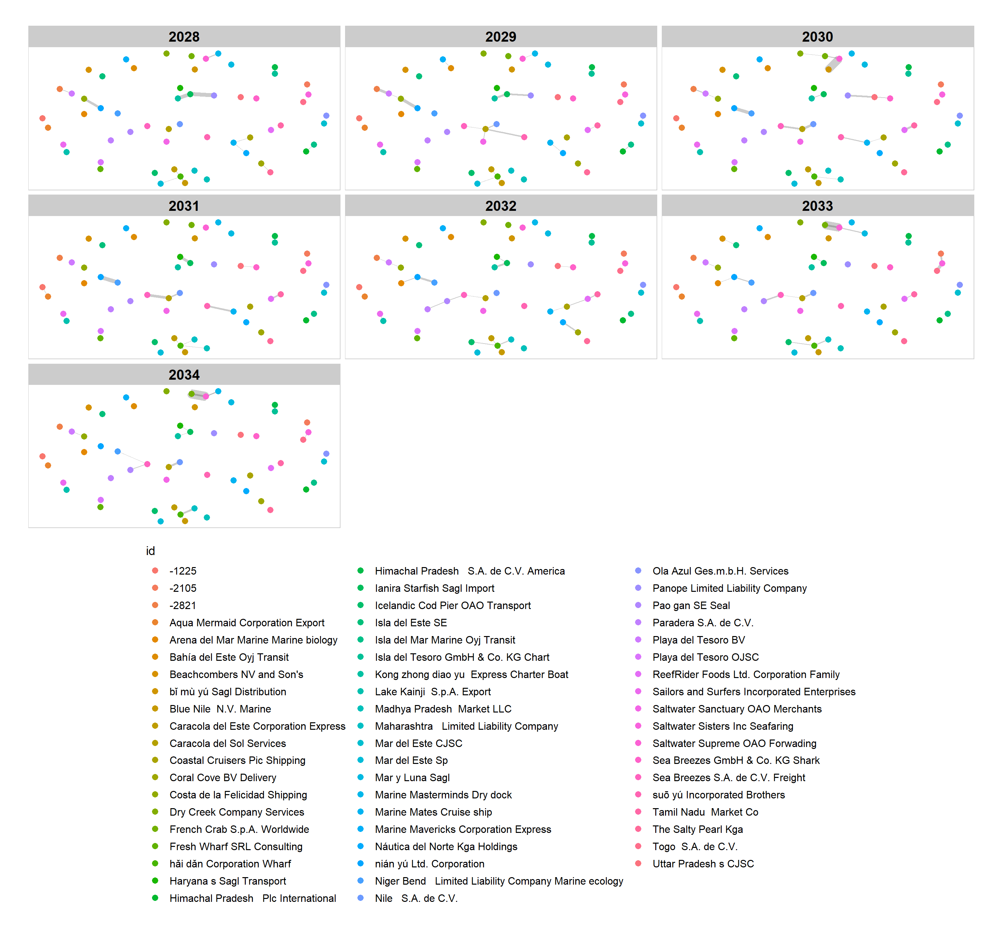

Show the code
pacman::p_load(jsonlite, lubridate, tidyverse, tidygraph, ggraph, visNetwork)Shaun Tan
May 26, 2023
May 27, 2023
The country of Oceanus has sought FishEye International’s help in identifying companies possibly engaged in illegal, unreported, and unregulated (IUU) fishing. As part of the collaboration, FishEye’s analysts received import/export data for Oceanus’ marine and fishing industries. However, Oceanus has informed FishEye that the data is incomplete. To facilitate their analysis, FishEye transformed the trade data into a knowledge graph. Using this knowledge graph, they hope to understand business relationships, including finding links that will help them stop IUU fishing and protect marine species that are affected by it. FishEye analysts found that node-link diagrams gave them a good high-level overview of the knowledge graph. However, they are now looking for visualizations that provide more detail about patterns for entities in the knowledge graph
Use visual analytics to identify temporal patterns for individual entities and between entities in the knowledge graph FishEye created from trade records. Categorize the types of business relationship patterns you find. Limit your response to 600 words and 6 images.
For minicase 2, there is the large dataset “MC2”, and the 12 individual datasets from the bundle date of the different individual fish species.
tuna <- jsonlite::fromJSON("data/bundles/tuna.json")
shark <- jsonlite::fromJSON("data/bundles/shark.json")
salmon <- jsonlite::fromJSON("data/bundles/salmon.json")
salmon_wgl <- jsonlite::fromJSON("data/bundles/salmon_wgl.json")
pollock <- jsonlite::fromJSON("data/bundles/pollock.json")
mackerel <- jsonlite::fromJSON("data/bundles/mackerel.json")
lichen <- jsonlite::fromJSON("data/bundles/lichen.json")
herring <- jsonlite::fromJSON("data/bundles/herring.json")
cod2 <- jsonlite::fromJSON("data/bundles/cod2.json")
chub_mackerel <- jsonlite::fromJSON("data/bundles/chub_mackerel.json")
catfish <- jsonlite::fromJSON("data/bundles/catfish.json")
carp <- jsonlite::fromJSON("data/bundles/carp.json")Taking a look at the MC2 dataset:
List of 5
$ directed : logi TRUE
$ multigraph: logi TRUE
$ graph : Named list()
$ nodes :'data.frame': 34576 obs. of 4 variables:
..$ shpcountry: chr [1:34576] "Polarinda" NA "Oceanus" NA ...
..$ rcvcountry: chr [1:34576] "Oceanus" NA "Oceanus" NA ...
..$ dataset : chr [1:34576] "MC2" "MC2" "MC2" "MC2" ...
..$ id : chr [1:34576] "AquaDelight Inc and Son's" "BaringoAmerica Marine Ges.m.b.H." "Yu gan Sea spray GmbH Industrial" "FlounderLeska Marine BV" ...
$ links :'data.frame': 5464378 obs. of 9 variables:
..$ arrivaldate : chr [1:5464378] "2034-02-12" "2034-03-13" "2028-02-07" "2028-02-23" ...
..$ hscode : chr [1:5464378] "630630" "630630" "470710" "470710" ...
..$ valueofgoods_omu: num [1:5464378] 141015 141015 NA NA NA ...
..$ volumeteu : num [1:5464378] 0 0 0 0 0 0 0 0 0 0 ...
..$ weightkg : int [1:5464378] 4780 6125 10855 11250 11165 11290 9000 19490 6865 19065 ...
..$ dataset : chr [1:5464378] "MC2" "MC2" "MC2" "MC2" ...
..$ source : chr [1:5464378] "AquaDelight Inc and Son's" "AquaDelight Inc and Son's" "AquaDelight Inc and Son's" "AquaDelight Inc and Son's" ...
..$ target : chr [1:5464378] "BaringoAmerica Marine Ges.m.b.H." "BaringoAmerica Marine Ges.m.b.H." "-15045" "-15045" ...
..$ valueofgoodsusd : num [1:5464378] NA NA NA NA NA ...A quick glimpse of the data reveals that the bundles data is breakdown of the shipments of the different species of fishes, for the year 2034 only, while MC2 data is the aggregated shipment of fish for the years 2028 - 2034.
As such, the approach in tackling the task would be to investigate the smaller bundles data first for clues, which would narrow down and scope the subsequent analysis when tackling the much larger MC2 data set.
This is done by mutating the dates (into month_year format), then aggregating the edges by source and target to determine the weight of each edge. As there were many obscure connections between nodes with low frequencies, a cutoff set at edge weight > 1000 was arbitrary set. This would give us the top 100+ connections.
MC2_edges <- as_tibble(MC2$links) %>%
mutate(arrivaldate = ymd(arrivaldate)) %>%
mutate(monthyear = format(arrivaldate, "%B %Y")) %>%
mutate(year = year(arrivaldate)) %>%
select(source, target, hscode, weightkg, volumeteu, arrivaldate, monthyear, year, valueofgoods_omu, valueofgoodsusd) %>%
distinct()
MC2_edges_aggregated <- MC2_edges %>%
group_by(source, target, hscode, year) %>%
summarise(Weight = n()) %>%
filter(source!=target) %>%
filter(Weight > 1000) %>%
ungroup()[1] 0[1] 0[1] 0[1] 498081[1] 5308806[1] 2886255The number of missing values in the “valueofgoods_omu” and “valueofgoodsusd” columns appear to be more than 50%. Additionally, the “volumeteu” has 520933 (out of ~5 million) missing values, and since weightkg provides a good proxy, these columns will be omitted from subsequent analysis.
We next prepare a new nodes data table by using the source and target fields of mc2_edges_aggregated data table. This is necessary to ensure that the nodes in nodes data tables include all the source and target values.
The tuna dataset was the most interesting for the year 2034. As such, the data wrangling for the tuna data set was done in a similar fashion as the MC2 dataset. However, as the dataset is smaller, additional fidelity of the shipments by monthyear was coded in.
# Tuna Data Wrangling
tuna_nodes <- as_tibble(tuna$nodes) %>%
select(id, shpcountry, rcvcountry)
tuna_edges <- as_tibble(tuna$links) %>%
mutate(arrivaldate = ymd(arrivaldate)) %>%
mutate(monthyear = format(arrivaldate, "%B %Y")) %>%
mutate(year = year(arrivaldate)) %>%
select(source, target, hscode, arrivaldate, monthyear, valueofgoods_omu)
tuna_edges_aggregated <- tuna_edges %>%
group_by(source, target, monthyear) %>%
summarise(Weight = n()) %>%
filter(source!=target) %>%
filter(Weight > 1) %>%
ungroup()# A tbl_graph: 29 nodes and 28 edges
#
# A directed acyclic multigraph with 8 components
#
# A tibble: 28 × 4
from to monthyear Weight
<int> <int> <chr> <int>
1 1 2 August 2034 58
2 1 2 September 2034 36
3 12 13 October 2034 15
4 3 4 September 2034 12
5 5 19 November 2034 11
6 1 2 October 2034 10
# ℹ 22 more rows
#
# A tibble: 29 × 3
id shpcountry rcvcountry
<chr> <chr> <chr>
1 Andhra Pradesh Sp Worldwide Utoporiana <NA>
2 Jharkhand Sea S.p.A. United <NA> -27
3 Dutch Mussels Pic Marine biology Rio Isla -27
# ℹ 26 more rows# A tbl_graph: 29 nodes and 28 edges
#
# A directed acyclic multigraph with 8 components
#
# A tibble: 29 × 3
id shpcountry rcvcountry
<chr> <chr> <chr>
1 Andhra Pradesh Sp Worldwide Utoporiana <NA>
2 Jharkhand Sea S.p.A. United <NA> -27
3 Dutch Mussels Pic Marine biology Rio Isla -27
4 Congo Rapids Ltd. Corporation <NA> Azurionix
5 Brisa Marina Surfboard AB Marine conservation -27 <NA>
6 Mar de la Felicidad Inc Motorboat <NA> -27
# ℹ 23 more rows
#
# A tibble: 28 × 4
from to monthyear Weight
<int> <int> <chr> <int>
1 1 2 August 2034 58
2 1 2 October 2034 10
3 1 2 September 2034 36
# ℹ 25 more rowsThe greatest edge weight is from the company “Andhra Pradesh Sp Worldwide” to “Jharkhand Sea S.p.A. United” with weight of 108, which is higher than the next highest edge weight of 20.
# Plotting of Tuna Graph with Monthyear facet
set_graph_style()
i <- ggraph(tuna_graph,
layout = "nicely") +
geom_edge_link(aes(width=Weight),
alpha=0.2) +
scale_edge_width(range = c(0.1, 5)) +
geom_node_point(aes(colour = id),
size = 2) +
theme(legend.position = 'right',
plot.background = element_rect(fill = 'white', color = 'black'),
plot.margin = margin(2, 2, 2, 2, "cm"),
plot.title = element_text(size = 16, face = 'bold'))
i + facet_edges(~monthyear, nrow = 3) +
theme(plot.margin = margin(2, 2, 2, 2, "cm"),
plot.background = element_rect(fill = 'white', color = 'black'),
plot.title = element_text(size = 18, face = 'bold'),
plot.subtitle = element_text(size = 14))
# Plotting of Tuna Graph with Monthyear facet
set_graph_style()
i <- ggraph(tuna_graph,
layout = "nicely") +
geom_edge_link(aes(width=Weight),
alpha=0.2) +
scale_edge_width(range = c(0.1, 5)) +
geom_node_point(aes(colour = id),
size = 2) +
theme(legend.position = 'right')
i + facet_edges(~monthyear, nrow = 3)
The monthyear facet shows that the majority of the 108 weight (representing shipments) are formed largely in the two months Aug 2034 (weight=58) and Sep 2034 (weight=36).
It is indeed suspicious that such high amounts of shipments appear for 2 months in a year and thereafter goes to zero, especially since there are no seasons in Tuna fishing. It could be an example of a company that is involved in IUU fishing - overfishing in that two months then closing down to open as another company.
This could definitely be explored in greater detail
# A tbl_graph: 58 nodes and 118 edges
#
# A directed acyclic multigraph with 13 components
#
# A tibble: 118 × 5
from to hscode year Weight
<int> <int> <chr> <dbl> <int>
1 7 40 841810 2034 6844
2 7 40 841810 2033 6185
3 30 40 950300 2030 6114
4 9 44 870324 2028 3547
5 31 56 304620 2031 3471
6 9 43 870323 2028 3237
# ℹ 112 more rows
#
# A tibble: 58 × 1
id
<chr>
1 Aqua Mermaid Corporation Export
2 Bahía del Este Oyj Transit
3 Beachcombers NV and Son's
# ℹ 55 more rows# A tbl_graph: 58 nodes and 118 edges
#
# A directed acyclic multigraph with 13 components
#
# A tibble: 58 × 1
id
<chr>
1 Aqua Mermaid Corporation Export
2 Bahía del Este Oyj Transit
3 Beachcombers NV and Son's
4 Blue Nile N.V. Marine
5 Caracola del Este Corporation Express
6 Coastal Cruisers Pic Shipping
# ℹ 52 more rows
#
# A tibble: 118 × 5
from to hscode year Weight
<int> <int> <chr> <dbl> <int>
1 1 33 761010 2031 1294
2 2 34 611595 2029 1123
3 3 35 381600 2033 1078
# ℹ 115 more rowsggraph(MC2_graph,
layout = "nicely") +
geom_edge_link(aes(width=Weight),
alpha=0.2) +
scale_edge_width(range = c(0.1, 8)) +
geom_node_point(aes(colour = id),
size = 5) +
theme(legend.key.size = unit(0.7, 'cm'), #change legend key size
legend.key.height = unit(0.7, 'cm'), #change legend key height
legend.key.width = unit(0.7, 'cm'), #change legend key width
legend.title = element_text(size=14), #change legend title font size
legend.text = element_text(size=12),
legend.position = "bottom",legend.direction = "vertical")
This is done to detect trends in the shipment frequency (weight of edges) over time.
g <- ggraph(MC2_graph,
layout = "nicely") +
geom_edge_link(aes(width=Weight),
alpha=0.2, show.legend = "top") +
scale_edge_width(range = c(0.1, 5)) +
geom_node_point(aes(colour = id),
size = 2) +
theme(legend.key.size = unit(0.7, 'cm'), #change legend key size
legend.key.height = unit(0.7, 'cm'), #change legend key height
legend.key.width = unit(0.7, 'cm'), #change legend key width
legend.title = element_text(size=14), #change legend title font size
legend.text = element_text(size=12),
legend.position = "bottom") #change legend text font size
g + facet_edges(~year)
Data is first prepared with the following code. Similarly, as we only want to investigate the top few companies in the network (as it intuitively likely would be the more global companies with more connections), the weight of the edges are filtered >1000, leaving the top 100+ companies.
# Data preparation for plotting an interactive network graph
MC2_edges_aggregated2 <- MC2_edges %>%
left_join(MC2_nodes, by = c("source" = "id")) %>%
rename(from = source) %>%
left_join(MC2_nodes, by = c("target" = "id")) %>%
rename(to = target) %>%
group_by(from, to) %>%
summarise(weight = n()) %>%
filter(from!=to) %>%
filter(weight > 1000) %>%
ungroup()These could be representative of companies which function as the middle men or hub, through which shipments get routed through.
Do note that this chart does not reveal the companies which have the greatest frequency of shipments.